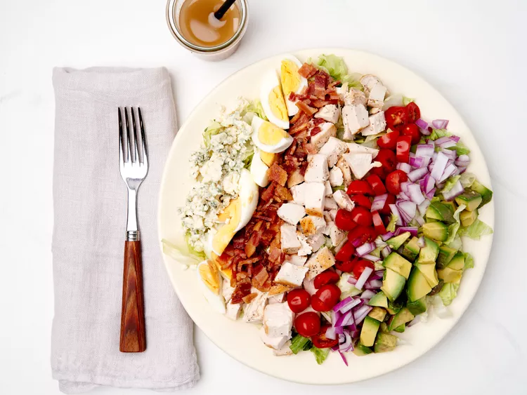

Home
Cobb Salad Recipe

This is a super simple to make Cobb Salad recipe!
Following the instructions below on how to make a simple but amazing tasting Cobb Salad.
Ingredients List
- 6 Slices of bacon
- 3 eggs
- 1 head iceberg lettuce, shredded
- 3 cups chopped, cooked chicken meat
- 2 tomatoes, seeded and chopped
- 3/4 cups blue cheese, crumbled
- 3 green onions, chopped
- 1 avacado - peeled, pitted and diced
- 1 (8 ounce ) bottle Ranch-style salad dressing
Steps
- Step 1: Place eggs in a saucepan and cover it completely with cold water; bring it to a boil, then cover and remove from the heat.
Let eggs sit for 10 to 12 minutes, then cool, peel and chop.
- Step 2: While the eggs are cooking, place bacon in a large, deep skillet. Cook over medium-high heat until evenly brown,
7 to 10 minutes. Drain, crumble, and set aside.
- Step 3: Divide shredded lettuce among individual plates. Top with rows of bacon, eggs, chicken, tomatoes, blue cheese, green onions,
and avacado.
- Step 4: Drizzle the dressing.